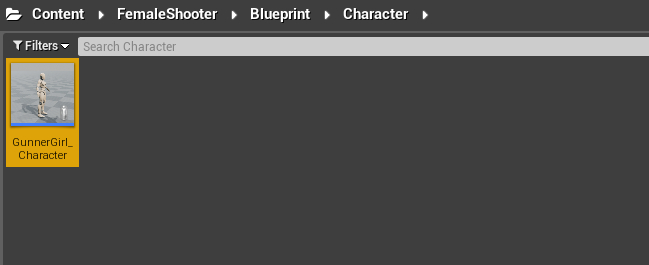
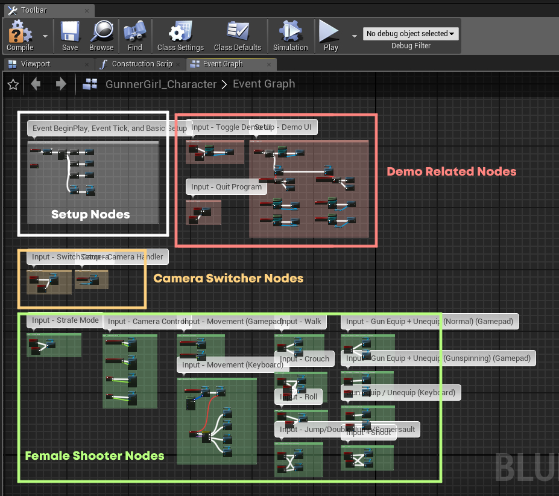
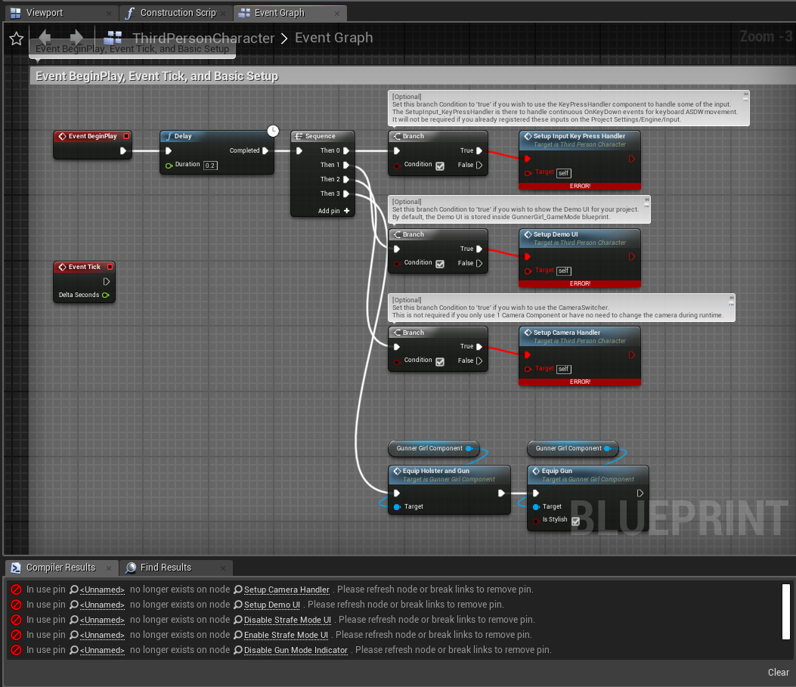
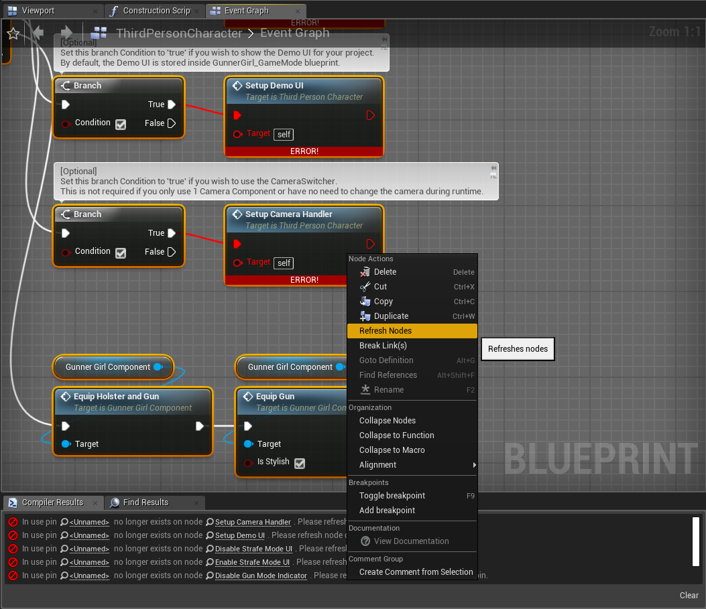
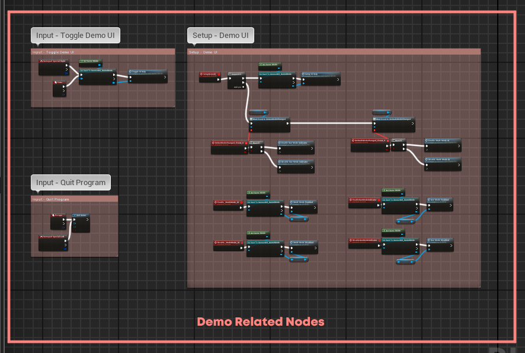
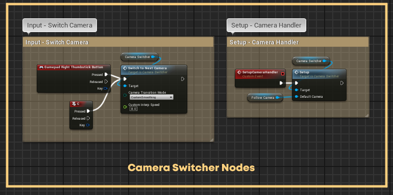
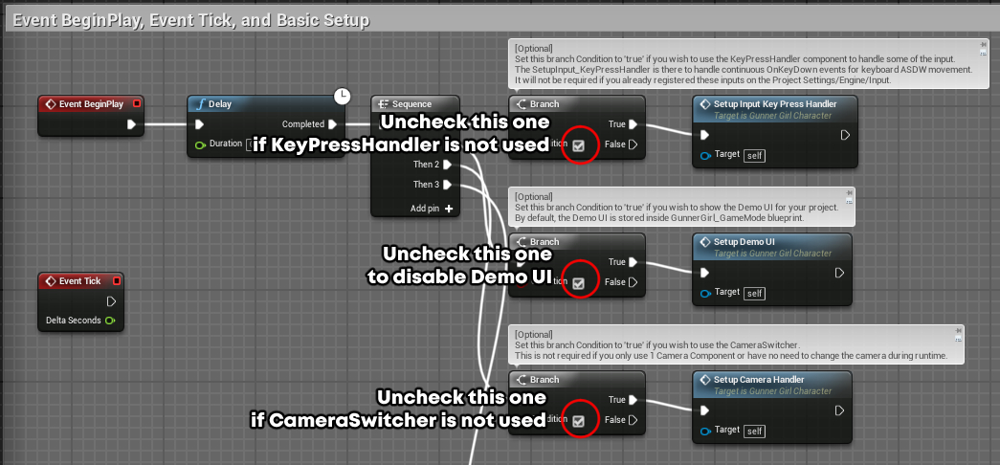
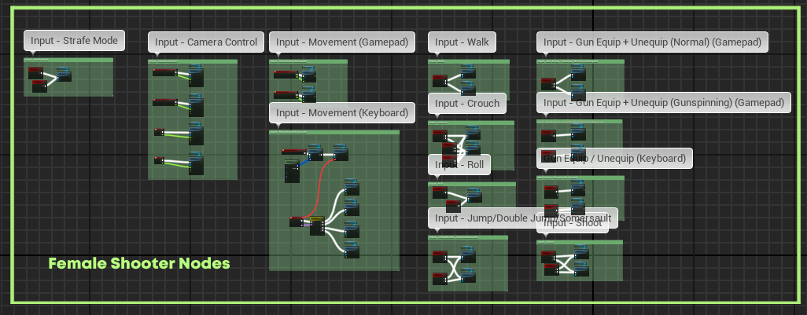

Female Shooter - User Guide
Adding functionalities to your character
Go to the editor, navigate to Content/FemaleShooter/Blueprint/Character/GunnerGirl_Character, open the file.

Open the Event Graph tab, you will find a list of inputs/actions that the character can perform.
The inputs used in this Event Graph is the same one as the default control scheme used for the Female Shooter demo.

To speed things up, you can just copy all of the nodes from the Event Graph and then paste it to your character.
That will give your character all of the functionalities that is available in the demo.
Once you've pasted the nodes on your character, try compiling the blueprint.
There's a possibility that you might get the following error.

If that happens,
- Reselect all of the nodes that you've just pasted on the character,
- Right Click on one of them,
- choose Refresh Nodes.

Try recompiling the character blueprint again and see if the problem persists.
In the case that the error still appear after all that, try sending a message to one of our channels.
We'll try and take a look at what the problem might be.
If there's no more problem after pasting the nodes, we will next proceed to preparing the animation system for your character.
Also, if you wish to have a more detailed explanation on what each nodes do, the descriptions are included in the sections below.
Demo Nodes
The nodes on the top-right area are used to provide functionalities for the demo.
These includes,
-
Toggle Demo UI
Used to turn on/off the UI interface of the Female Shooter demo. -
Quit Game
Quit the game by pressingEsc orSpecial Left button.
These nodes are not required for the Female Shooter template to function properly.
They can be excluded if necessary.

Camera Switcher Nodes
On the area below the setup, you can see nodes used for the Camera Switcher.
The Camera Switcher nodes are also not required, but might be useful if you need a smooth camera switching mechanism for your project.
Details on how to use the Camera Switcher component can be found in the following article.

Setup Nodes
The content of the setup nodes can also be omitted depending on your requirements.
If you do not wish to use them, you can either exclude them when you copy the template nodes,
Or you simply deactivate them by unchecking their setup functions in the 'Begin Play and Tick' section.
See the picture below for details.

Female Shooter Nodes
The nodes on the bottom area are the ones that are mainly required for the template.

The list of inputs/actions available within these nodes includes,
-
Character Movement (Gamepad)
Used to move the character using theLeft Thumbstick .
Light press will make the character walk, strong press make the character run. -
Character Movement (Keyboard)
Used to move the character using the keyboard.
Default input is set toASDW and handled by the KeyPresshandler component.The KeyPressHandler component is used here because the Female Shooter asset does not come with input registers on the project settings.
Usage of this component is optional and is not required if you already register your inputs in the project settings. -
Walk Modifier (Keyboard)
Used to activate walking mode from the keyboard.
Walk is activated when the key is held down, deactivated when the key is released.
Default input is set toLeft Shift . -
Crouch
Used to activate crouching.
Crouch is activated when the key is held down, deactivated when the key is released.
Crouch walk can be performed by moving the character while crouching.
Default inputs are set toLeft Ctrl ,Left Alt , andRight Shoulder . -
Roll
Used to perform rolling, can only be done when you're footed on the ground.
Default inputs are set toE andFacebutton Right . -
Jump, Double Jump, and Somersault
Used to trigger a jump action.
Default inputs are set toSpacebar andFacebutton Bottom .There are 3 jump actions that can be performed depending on the context,
-
If the character is on the ground, a normal jump will be performed.
-
If the character is airborne and the parameter IsAllowSomersault is checked, this will tell the character to perform a somersault.
By default, the somersault direction can be controlled using the Left Thumbstick .
If no somersault direction is given, the character will perform a somersault to the direction of their current movement.
-
If the character is airborne + parameter IsAllowSomersault is unchecked, the character will perform a double jump.
Do make sure that the value of JumpMaxCount is set to higher than 1 to enable the double jump functionality.
If you're not sure how to do this, see this article for instructions.
-
-
Gun Equip/Unequip (Normal + Gunspin) (Keyboard)
Used to toggle between equipping/unequipping the guns to the character's hands.
Default input for the non-gunspin animation is set to1 .
Default input for the gunspinning version is set to2 . -
Gun Equip/Unequip (Gunspin) (Gamepad)
Used to perform a gunspinning equip/unequip and move the guns to the character's hands.
Default input to equip guns is set toD-Pad Up .
Default input to unequip guns is set toD-Pad Down . -
Gun Equip/Unequip (Normal) (Gamepad)
Used to normally equip/unequip the guns to the character's hands.
Default input is set toLeft Trigger .
Hold button to equip guns, release button to unequip guns. -
Gun Shoot
Used to activate the shooting animation of the character.
The shots will be fired alternatingly between the left gun and the right gun.
A muzzle flash will be spawned on each gun's muzzle whenever the shot is triggered.Hold the key to start shooting, release the key to stop shooting.
Default input is set toRight Trigger andLeft Mouse Button .This function only activate the shooting animation, not the actual shot itself.
The timing of when the actual shot is fired is determined by the animation.
See the Anim Notify sections for Anim_GunShoot_LeftArm and Anim_GunShoot_RightArm for details on how to modify the timing of the actual shot.
-
Camera Control
Used to perform basic camera control.
Default input is controlled using theRight Thumbstick .Camera speed can be modified using either the TurnRatePerSecond or Multiplier variables.
Camera direction can be inverted using the IsInverted variable. -
Toggle Strafe Mode
Used to toggle between normal movement and strafing movement.
Default inputs are set toY andFacebutton Top .
Next article: Setting up the animation system